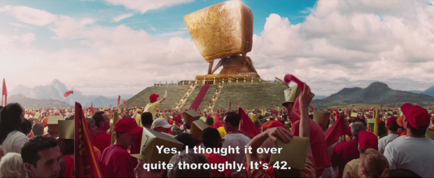
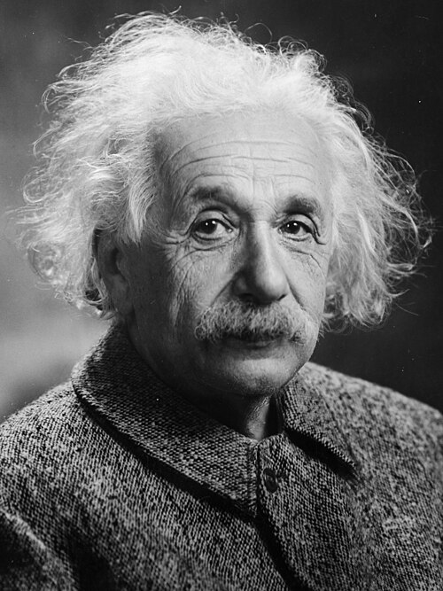
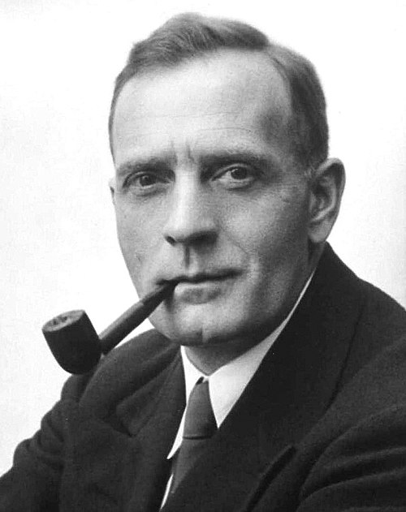
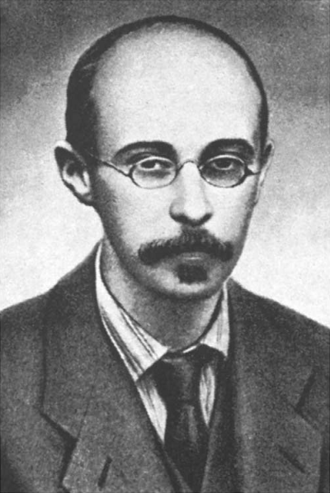
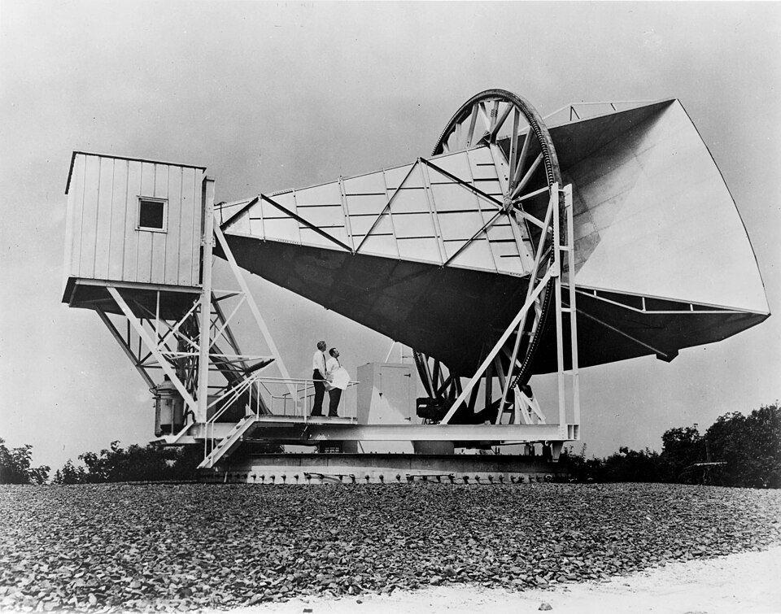
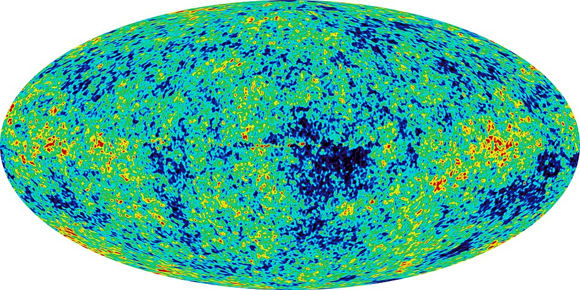
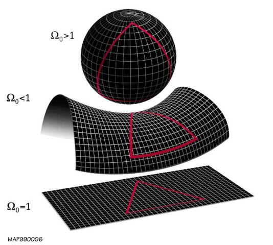
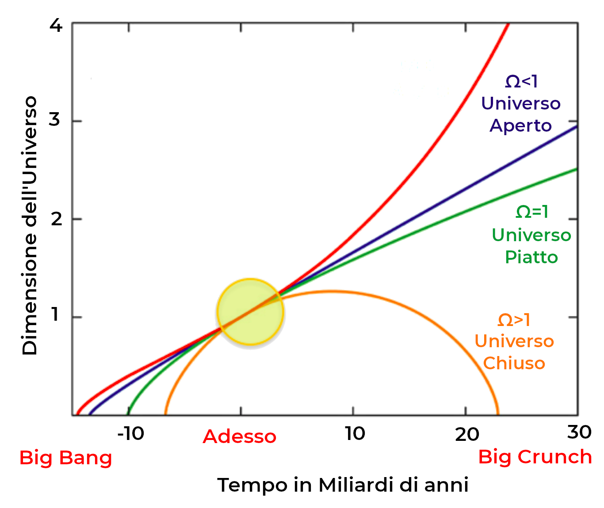

Cosmologia
Da dove veniamo, dove siamo e dove andiamo?
Chi sono?
La risposta
Cosa vuole dire Cosmologia
- Dal greco antico κόσμος?, kósmos, "ordine" e λόγος, lógos, "discorso"
- Nasce come branca della filosofia, interessandosi dello spazio, del tempo e della materia
- Inizialmente esclude ogni domanda su origine e fine del cosmo, a cui cercano risposta le Cosmogonie fisiche e religiose
Breve storia della Cosmologia
- Primi cenni in epoca assiro babilonese
- Epoca classica: il sistema geocentrico, l'universo perfetto e immutabile, increato ed eterno
- La rivelazione ebraica e il creazionismo. Il problema del tempo
- La rivoluzione copernicana, la gravitazione universale
- La scoperta della Via Lattea e delle altre galassie. Da Hershel a Hubble
La nascita della Cosmologia moderna


Il dibattito: universo statico vs universo in espansione

1960: una clamorosa scoperta
La radiazione cosmica di fondo
I problemi della teoria del Big Bang
- Il problema dell'orizzonte
- Il problema della flatness
- Il problema della materia oscura
La storia dell'Universo

Era di Plank
- Da 0 a 10-44 s
- Le 4 interazioni fondamentali (elettromagnetica, debole, forte e gravità) sono di uguale intensità e probabilmente unificate
- Universo estremamente caldo e denso
- Date le forze in gioco e le distanze inferiori alla lunghezza di Plank (1.616x10-35 m) non funziona più la relatività di Einstein, ma esclusivamente la meccanica quantistica
Era di grande unificazione
- 1030 K
- 10-43 s
- Nasce lo spazio-tempo
- Le forze sono tutte unite eccetto la gravità
Era dell'inflazione
- 10-35 s
- Diametro dell'universo 10-26 m
- 1027 K
- Rapida e drastica espansione dell'universo
- Si iniziano a formare le prime particelle a coppie (particella-antiparticella)
Era elettrodebole
- Da 10 m a 1012 m
- Da 1027 K a 1015 K
- Fino a 10-9 s
- Viene completata la suddivisione delle interazioni e continuano le formazioni delle particelle
Era degli adroni
- 10-6 s
- 1030 K
- Diametro dell'universo 1014 m
- Si formano i primi adroni, Ossia particelle formate da quark o quark e antiquark
Era dei leptoni
- 10-4 s
- 1012 K
- Dopo 1 secondo 1012 K
- Dopo 100 secondi 1011 K
- Si formano i primi leptoni, tra cui elettroni, muoni e tau
Era della nucleosintesi
- 100 s
- Più di 100 miliardi di km
- 108 K
- La maggior parte dei neutroni decadono in protoni
- Si formano i primi nuclei di elio-4 e deuterio
Era della materia
- 300 000 anni
- 3000 K
- 100 milioni di anni luce
- Si forma la radiazione cosmica di fondo dal residuo dei fotoni rimasti dall'era dell'inflazione
- 1 milione di anni dopo il Big Bang si forma il primo vero atomo di Idrogeno
Le prime stelle
- Si formano le prime stelle
- 500 milioni di anni dal Big Bang
- HE 1523-0901 la stella più lontana mai misurata (13.2 miliardi di anni luce)
Avanti veloce
- 12.7 miliardi di anni fa le prime galassie
- 10 miliardi di anni fa nasce la Via lattea
- 7 miliardi di anni dopo il Big Bang l'universo accelera
La forma dell'universo
La forma dell'universo
Il destino dell'universo
- Universo eterno
- Universo finito
- Il multiverso
- Universo ciclico
Big Freeze
- L'universo si dilata e si raffredda
- Non vi è più energia libera
- 1014 anni: le stelle si sono raffreddate
- 1015 anni: Tutti i pianeti si sono separati dalle stelle
- 10100 anni: i buchi neri super massicci evaporano
Universo ciclico
- Big Crunch
- Big Bounce
- Cosmologica ciclica conforme
Il multiverso
- Tanti universi contemporanei
- La selezione cosmologica: buco nero e buco bianco